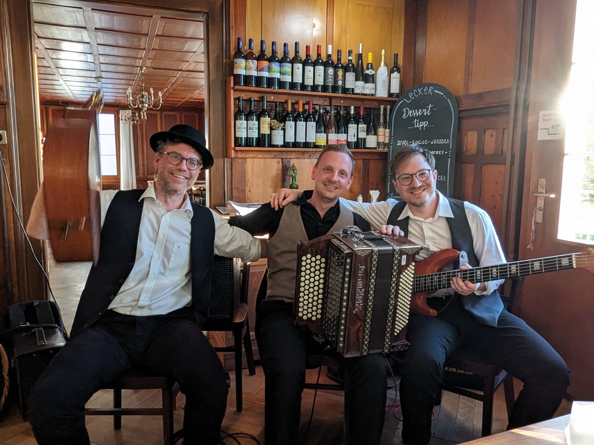
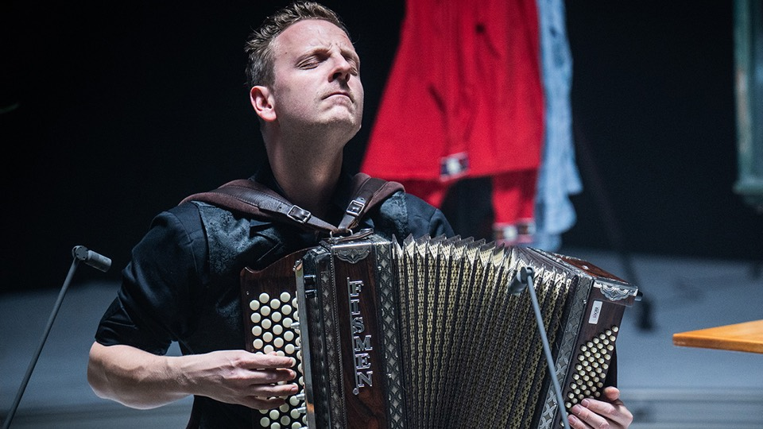
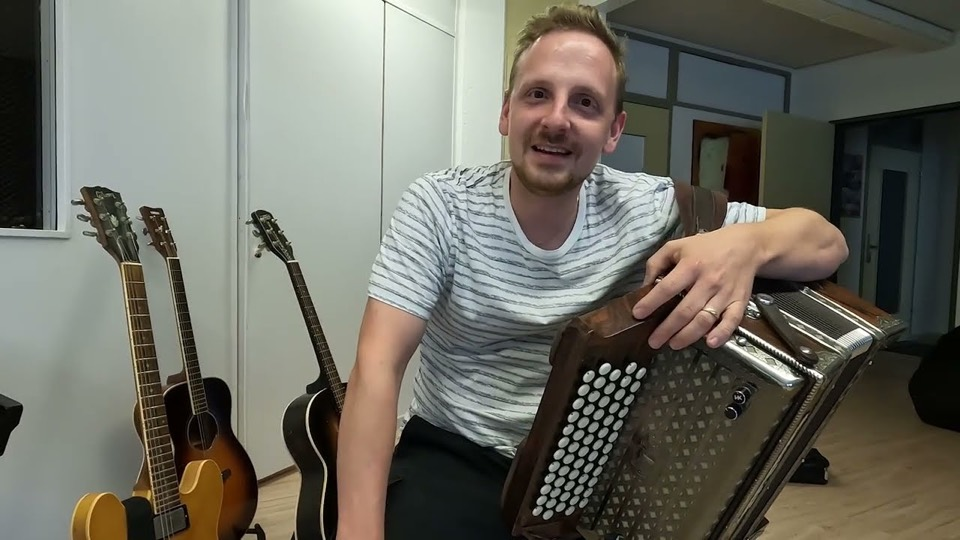
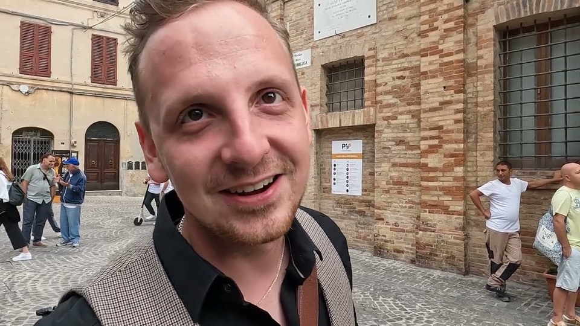
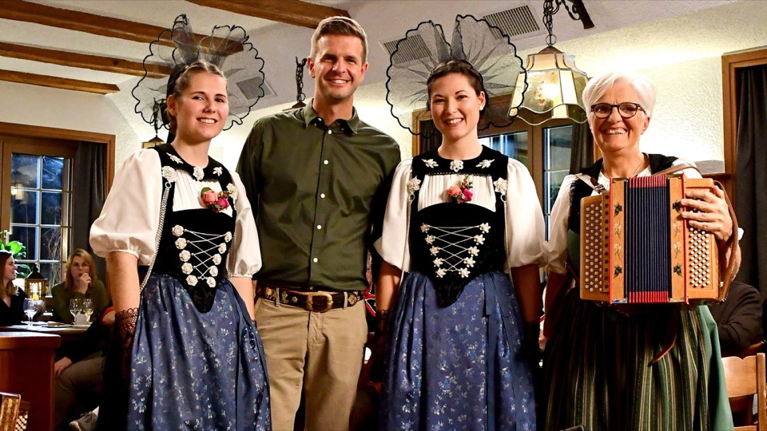
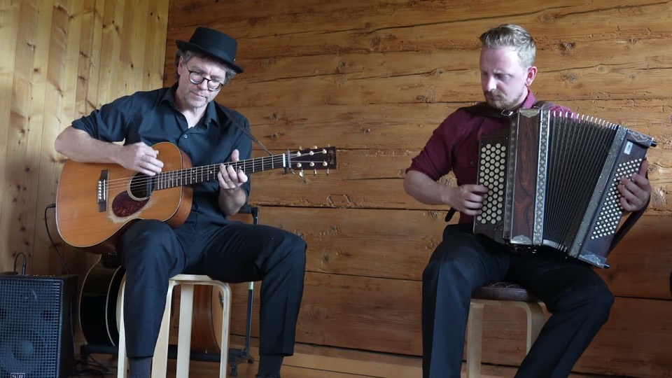
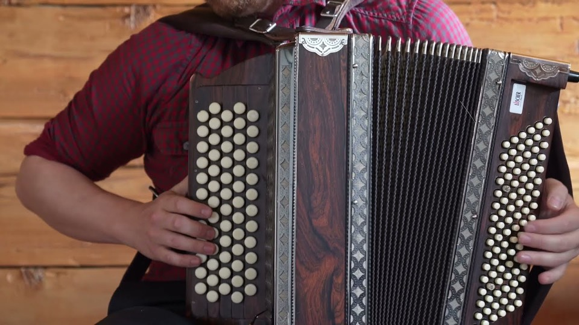

seit 2014
Julian von Flüe Trio
Alpine Folk: Julian von Flües eigene Kompositionen, verwurzelt in der Musik des Alpenraums und inspiriert von amerikanischer Country- und Folkmusik. Aktuelles Album: «Alpine Folk» (2024).
Julian von Flüe – Akkordeon · Marc Scheidegger – Gitarre · Matthias Abächerli – Bass (seit 2021)
- 2014 – heutezahlreiche Konzerte
- 2018CD-Produktion «Drive»
- 2019CD-Taufe
- 2019TV Oberwallis
- 2021Matthias Abächerli kommt am Bass dazu – das Trio in der heutigen Besetzung
- 2022CD-Produktion «Dur D’Altstadt» abgeschlossen
- 2022Auftritt in der SRF-Sendung Potzmusig
- 2023CD-Taufe am 11. März, Chollerhalle Zug
- 2023Zwei Auftritte auf der Hauptbühne des Premio Internazionale della Fisarmonica, Castelfidardo (Italien)
- 2024CD «Alpine Folk» mit 13 neuen Kompositionen, Plattentaufe am 23. November in der Galvanik Zug
- 2025Tournee «Alpine Folk», u. a. Stanser Musiktage und Pregny Alp Festival; Interview bei SRF Musikwelle
- 2025SRF «Typisch Volksmusik Sessions»
- 2026Auftritt in der SRF-Sendung Potzmusig (21. Februar)
- 2026Landäbärg Unplugged in Sarnen und Küstenklänge auf der MS Switzerland
Hörproben Apple Music

SRF Video abspielen:
YouTube Video abspielen:
YouTube Video abspielen:
SRF Video abspielen:
YouTube Video abspielen:
YouTube Video abspielen:Videos werden erst beim Abspielen von YouTube bzw. SRF geladen.